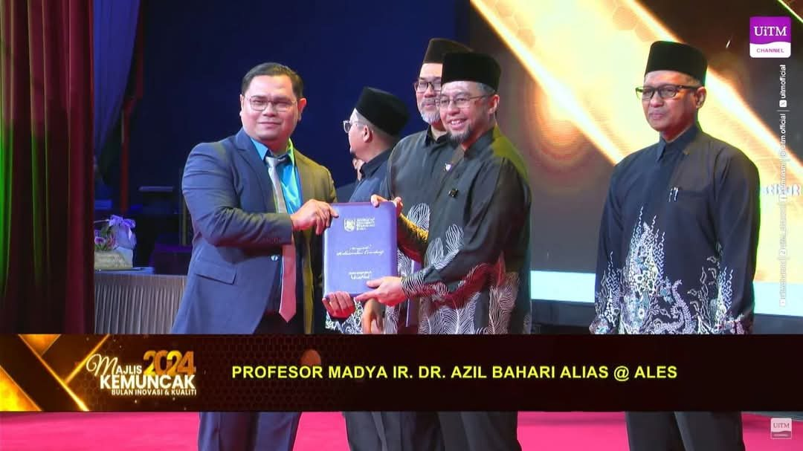
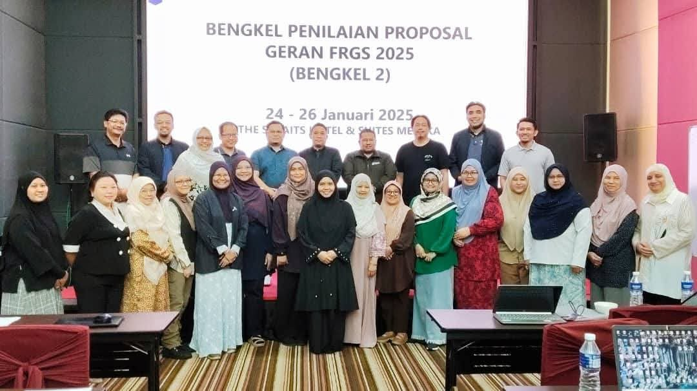
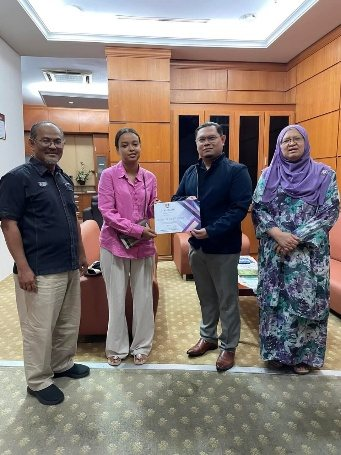

Biomass & waste to fuel
Combustion, co-firing and torrefaction of palm and rice residues with Malaysian coal, gasification for hydrogen, and waste-to-energy. Includes his most-cited paper in Bioresource Technology (426 Scopus citations).
Turning waste into clean energy and materials, safely: themes, the INPRES group, citations and funding.
Combustion, co-firing and torrefaction of palm and rice residues with Malaysian coal, gasification for hydrogen, and waste-to-energy. Includes his most-cited paper in Bioresource Technology (426 Scopus citations).
Biochar, activated carbon and xerogel adsorbents from coconut shell, palm kernel shell and empty fruit bunch that capture SO₂, H₂S, CO₂ and volatile organic compounds, including gas-mask filters designed for Malaysia's climate.
Cellulose and bamboo hydrogels, aerogels and biochar electrodes for flexible supercapacitors, with a Q1 review in Renewable & Sustainable Energy Reviews (2025) and an international AI-assisted materials grant (2026).
Vapour cloud explosion and fire modelling, dynamic risk assessment and CIMAH compliance, feeding directly into 81 CIMAH consultancy projects and industry training.
He founded INPRES in 2019 and has led it since. It is a UiTM Centre of Excellence (Entiti Kecemerlangan) at Tier 4, rated five-star every year from 2019 to 2024, and was named Best Research Group at the College of Engineering's DNA Penyelidikan 2024. Most of his postgraduate students do their research in the group.


Citations have risen steadily, reaching a record 293 in 2025.
2026 is year to date (25 September 2026).
| Database | Documents | Citations | h-index |
|---|---|---|---|
| Scopus cited by 1,065 documents | 73 | 1,111 | 13 |
| Web of Science Core Collection | 28 | 739 | 9 |
| Google Scholar i10-index 34 | – | 1,848 | 18 |
Profiles: Google Scholar · Scopus · ORCID
| Cites | Paper | Journal | Year |
|---|---|---|---|
| 426 | Investigation on thermochemical behaviour of low rank Malaysian coal, oil palm biomass and their blends during pyrolysis via thermogravimetric analysis (TGA) | Q1 Bioresource Technology | 2010 |
| 122 | Lignocellulosic biomass solid fuel properties enhancement via torrefaction | Q2 Procedia Engineering | 2016 |
| 86 | Air gasification of agricultural waste in a fluidized bed gasifier: hydrogen production performance | Q2 Energies | 2009 |
| 48 | Co-combustion of agricultural residues with coal in a fluidised bed combustor | Q1 Waste Management | 2009 |
| 45 | Green building techniques: under the umbrella of the Climate Framework Agreement | Q1 Babylonian Journal of Machine Learning | 2024 |
| 32 | Equilibrium and kinetic studies in adsorption of H₂S using coconut shell activated carbon xerogel | Q3 Desalination and Water Treatment | 2024 |
| Period | Project | Status | RM |
|---|---|---|---|
| 2026–2028 | Hybrid Biochar-Based Supercapacitors Enhanced by AI/Machine-Learning-Driven Material Optimization: a Malaysia–Thailand Strategic Research Partnership Strategic Research Partnership – International (SRP) | Pending Activation | 50,000 |
| 2025–2028 | Prediction of the Newtonian of Preferential Flow in the Gas Mask Filter in Malaysia's Climate Environment Biaya Terus – Government | Active | 177,800 |
| 2025–2027 | Equilibrium and Kinetic Studies in Adsorption of Volatile Organic Compounds (VOCs) using Coconut Shell Activated Carbon Xerogel (CSACX) Industry grant (private) | Active | 10,000 |
| 2023–2025 | Investigating the efficacy of massive open online courses (MOOCs) in enhancing student learning outcomes: a case study in physical chemistry course of the students form UiTM and UNESA SRP / UiTM | Completed | 20,000 |
| 2023–2025 | Adsorption of Volatile Organic Compounds (VOCs) using Newly Improved Hybrid Carbon Gel Derived from Coconut Shell: Synthesis, Characterization and Optimization Dana Dalam Fakulti (DDF) | Active | 10,000 |
| 2022–2024 | A Study on Trends in Consultation Types for Each School of Engineering at UiTM Shah Alam in the Years 2021-2023 Geran Sanjung Sarjana (GSS) | Active | 1,500 |
| 2021–2023 | Synthesis and Characterizations of Oven-Dried Oil Palm Empty Fruit Bunches (EFB)-Based Xerogels for Absorption of Engine Oil Research Entity Collaboration Grant (KEPU) | Active | 40,000 |
| 2021–2023 | Hydrogen Sulphide Removal using a Blended Series of Biochar and Xerogel Originated from Coconut Shells Dana Dalam Fakulti (DDF) | Completed | 20,000 |
| 2021–2023 | A Blending Series of Coconut Shell Biochar (CSB) and Xerogel Based Coconut Shell (XCS) for H2S Removal in a Multilayered Sorption Bed Industry grant (private) | Completed | 20,000 |
| 2019–2022 | Kinetics and Isotherm Studies SO2 Adsorption on to Novel Blended Activated Carbon and Hydrogel Biochar Derived from Industrial Solid Waste (Wood Waste) Research Entity Initiative (REI) | Active | 32,000 |
| 2019–2022 | Monte Carlo Simulation on CO2 Transport Diffusion and Phenomena for Newly Developed Adsorbent Material (Hydrogel Biochar Composite) Fundamental Research Grant Scheme (FRGS) | Completed | 99,000 |
| 2016–2017 | Development of Blended Hydrogel Biochar with Coal Fly Ash for Heavy Metal Removal Geran Insentif Penyeliaan (GIP) | Completed | 25,000 |
| 2016–2018 | Development of Newly Improved Hydrogel Biochar from Biomass Residues for Harmful Gas Cleaning (So2 and H2s) in a Novel Multi-Layered Sorption Bed Dana BESTARI | Completed | 35,000 |
| 2013–2016 | Coal and Municipal Solid Waste Combustion Kinetic Analysis of a New Evolved Gas Analysis (EGA) Technique Research Acculturation Grant Scheme (RAGS) | Completed | 65,000 |
| 2012–2014 | Development of Oxygen Consumption Model for the Oxidation of Rice Husk and Palm Fibre Research Intensive Faculty (RIF) | Completed (Conditional) | 5,257 |
| Period | Project | Status | RM |
|---|---|---|---|
| 2024–2027 | Interaction Mechanism of Fungi and Bacteria Utilizing Perfluorinated Alkyl Substances (PFAS) in Marine Environment Fundamental Research Grant Scheme (FRGS) | Active | 85,200 |
| 2023–2026 | Elucidation and stimuli-responsive analyses on conductive bamboo- based cellulose hydrogel as flexible hybrid supercapacitor in energy storage and conversion FRGS (UPM) | Active | 94,800 |
| 2022–2025 | Heterogenous Fenton Chemistry: Mechanisms of Degradation Kinetics of Plastic Pollutants by the Interaction Between Iron Bearing Soil Minerals and Glutathione in Soil and Groundwater Fundamental Research Grant Scheme (FRGS) | Completed | 102,500 |
| 2021–2024 | Conceptual Dynamic Reliability and Risk Assessment Framework in the Control of Major Accident Hazard using Bayesian Approach Fundamental Research Grant Scheme (FRGS) | Completed | 64,300 |
| 2020–2023 | Dynamic Risk Assessment Method Coupled with Material Strength and Consequence Real Time Analysis in Process Safety Optimization Special Research Grant (GPK) | Completed | 20,000 |
| 2020–2023 | Green Synthesis of Hybrid Hydrogel from Chitin/Bamboo Nanocellulose on Arsenic Removal Special Research Grant (GPK) | Active | 20,000 |
| 2020–2023 | Interaction Between Plant Based Anionic Surfactant and Cd and Pb Ions in Aqueous Solution using Impregnated Activated Carbon Special Research Grant (GPK) | Active | 20,000 |
| 2020–2023 | Synthesis of Highly Porous Aerogels Oil Absorbent by Supercritical Drying Young Talent Researcher (YTR) | Completed | 50,000 |
| 2018–2020 | Development of Palm Oil Based Coating Material from Unripe Empty Fruit Bunch for Oil and Gas Pipeline Application MITRA Perdana | Completed | 36,000 |
| 2018–2019 | Agricultural Waste to Safe Product: Unripe EFB Oil for Production of Eco-Friendly Thermo-Bioplastic Feeding Bottle MITRA PERDANA / UiTM | Completed | 31,000 |
| 2016–2020 | Prediction of Uncertainty Quantification in the Health Consequences Cause by Fire Explosion (PF) Phenomenon at Industrial Domino Accident Scenarios Fundamental Research Grant Scheme (FRGS) | Completed (Conditional) | 131,000 |
| 2014–2016 | Desulphurisation of Coal Combustion Flue Gas using Mixed Activated Carbon from Coconut Shell with Coal Fly Ash Auto Catalytic Adsorbent eScienceFund | Completed | 161,000 |
| 2014–2016 | Kinetics Modeling of H2S Adsorption on Hydrogel Bioadsorbent Fundamental Research Grant Scheme (FRGS) | Completed | 119,000 |
| 2014–2016 | Kinetic Behaviour Study on Catalytic Co-Combustion of Torrified Biomass Waste with Malaysian Coal Fundamental Research Grant Scheme (FRGS) | Completed | 97,000 |
| 2014–2016 | Synthesis And Mechanistic Studies on Biochar-Based Carbon for Energy Storage FRGS (MOHE) | Completed | 102,000 |
| 2013–2015 | Changes in the Microscopic Properties of Carbonaceous Adsorbents Upon Charging-Discharging of Methane in the Presence of Pre-Adsorbed Water Fundamental Research Grant Scheme (FRGS) | Completed | 99,000 |
| 2013–2015 | Hydrogel Derived Biochar Composite for Sequestration of Carbon Dioxide E-Science (MOSTI) | Completed | 0 |
| 2012–2014 | Study on the Liquefied Petroleum Gas (LPG) Tanker Accident Consequences During Road Transportation Research Intensive Faculty (RIF) | Completed (Conditional) | 8,621 |
| 2007–2010 | Development of Generic Decision Support System for Scheduled Waste Management in Malaysia Fundamental Research Grant Scheme (FRGS) | Completed | 51,000 |
| 2007–2013 | A Kinetic Study of Thermal Behaviour of Bituminous Coal and Industrial Solid Waste (ISW) Blends During Pyrolysis Using Thermogravimetric Analysis FRGS (MOHE) | Completed | 80,000 |
| 2007–2007 | Mild Oxidising Treatment of Senakin Bituminous Coal using Sulphuric, Nitric and Hydrochloric Acid Solution Under Ambient Condition Self-funded | Completed | 0 |
| 2006–2007 | Modification of a Fluidized Bed Test Rig for Fluidization of Palm Fibre Internal grant | Completed | 16,600 |

